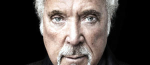
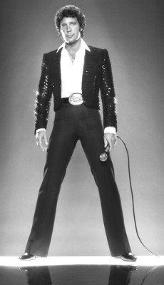

Weltberühmte
Künstler in der Papp László Budapest
Sportarena
Papp
László
Budapest Sportarena - Adresse:
Stefánia út 2, 1143 Budapest Die
multifunktionale Sportarena von Budapest hat eine
Zuschauerkapazität für 12.500 Personen und wurde nach
der Boxlegende László Papp (1926-2003)benannt. László
Papp war der erste Boxkämpfer, der bei
drei aufeinanderfolgenden Olympischen Spielen die Goldmedaille gewann.
1948 im Mittelgewicht, 1952 und 1956 im Halbmittelgewicht. Seine
ebenfalls sagenhafte Profikarriere beendete er 1964 und arbeitete bis
zuletzt als Trainer. Die meisten seiner Kämpfe bestritt
er im ehemaligen Sportcsarnok (=Sporthalle) von Budapest, dem deutlich
kleineren
Vorgänger
dieser
Sportarena auf der Innenstadt zugewandten Seite des
benachbarten Ferenc
Puskás
Fussballstadions.
Die
Sportarena ist bedeckt. Im Hintergrund sieht man das Ferenc Puskás Fußballstadion,
das gerade abgebaut wird und voraussichtlich im Jahre 2018
durch ein nur noch 60.000 Zuschauer fassendes Zentralstadion ersetzt
wird. Auf
dem Dach der Sportarena befinden sich eine Parkanlage, sowie eine Terrasse
mit Café und Restaurant, ferner ein
Sportmuseum. Es gibt an der Arena rd.
1.500
überdachte und überwachte Parkplätze -
für die Zuschauerkapazität
sicherlich ausreichend, denn die Anbindung an die öffentlichen
Verkehrsmittel ist sehr gut. Vom Stadtzentrum
am Deák tér Platz, wo sich die ersten drei
U-Bahnlinien
von Budapest kreuzen, erreicht man die Sportarena (Punkt A auf Google
Map) in ca. 15 Minuten mit
der U-Bahnlinie 2. Aussteigen an der Haltestelle "Puskás
Ferenc Stadion".
Der
Flughafen Budapest
liegt rd. 20 km südöstlich
von der "Papp
László
Budapest Sportarena", am Stadtrand, nördlich der Ortschaft
Vecsés. Für die
Fahrt vom Flughafen zur Sportarena benötigt man
tagsüber eine
rd. 30-Minuten-Fahrt mit dem PkW. Es gibt an der Arena rd.
1.500
überdachte und überwachte Parkplätze -
für die Zuschauerkapazität
sicherlich ausreichend. Seit Ende 2015 gelten besondere Sicherheitsvorschriften,
dazu zählen Rauchverbot, keine größere Taschen mitnehmen, Ton-
und Videoaufnahmeverbot auch per Handy, usw.
100 KÖPFIGE ZIGEUNERORCHESTER
25. Február 2018 / Sonntag 19:00 Uhr
Papp
László Budapest Sportaréna Adresse:
Stefánia út 2, 1143 Budapest Budapest
Sportarena Seit seiner
Gründung im Jahre 1985 füllt das 100 Köpfe zählende
Zigeunerorchster die Opern-, Operettenhäuser und
Musikhallen aller Art, ja sogar die Landesparadeplätze
weltweit, denn das Repertoire dieser
Zigeunerkapelle erfaßt alle Genre der Musik. Die Werke von
Liszt, Bartók, Kodály, Hubay, Erkel, Brahms, Tschaikovszki,
Sarasate, Strauss u.a. spielen sie in allerhöchster Qualität
und dabei kommt ihre eigene Zigeunermusik auch nicht kurz -
Stundenlanger Musikgenuss pur. - Ein Vorspann:
KRAFTWERK
21. Február 2018 / Mittwoch 20:00 Uhr
Papp
László Budapest Sportaréna Adresse:
Stefánia út 2, 1143 Budapest Budapest
Sportarena Lt.
Wikipppedia ist Kraftwerk "eine deutsche Band aus
Düsseldorf, die 1970 von Ralf Hütter und Florian Schneider
gegründet wurde. Kraftwerk ist vor allem durch Pionierarbeit
auf dem Gebiet des Elektropop bekannt geworden." Die
Performance der Gruppe basiert auf den festen Glaube über
die Beziehung der Menschen zur Maschine. Die Ausstellung,
begleitet von Aftritt im Museum of Modern Art in New York im
Jahre 2012 folgten weitere Ausstellungen mit Konzerten in
London, Tokio, Sidney, Los Angeles, Paris, Berlin und
Bilbao. Mit Grammy Lifetime Achievement geehrt wurden Ralf
Hütter und seine letztjährigen Mitwirkenden im Jahre 2014.
FONOGRÁF KONCERT
16. Február 2018 / Freitag 19:00 Uhr
Papp
László Budapest Sportaréna Adresse:
Stefánia út 2, 1143 Budapest Budapest
Sportarena
Ein Konzert für ungarische
Rockfans der älteren Generation mit dem Thema
Fonográf - die bekannteste und erfolgreichste Rockgruppe in
den Jahren 1970 bis 1980 - neuformiert aus den Mitgliedern
der aufgelösten "Illés Együttes" um Szörényi-Bródy.
ROD STEWART
29. Januar 2018 / Montag 20:00 Uhr
Papp
László Budapest Sportaréna Adresse:
Stefánia út 2, 1143 Budapest Budapest
Sportarena
Mit über 150 Millionen verkauften Tonträgern gehört der im
Jahre 1945 geborene Engländer aus London zu den
erfolgreichsten britischen Sängern auf der Insel. In den USA
rangiert er aufgrund seiner Albumverkäufe noch höher, auf
dem 14. Platz der männlichen Interpreten. Insgesamt 8 Kinder
zeugte er von diversen Müttern und auch seine
Schilddrüsenkrebs-OP mit anschließender Therapie war
erfolgreich.
ZOLTÁN MÁGA - NEUJAHRSKONZERT zum X. Male
01.
Januar 2018 / Montag 19 Uhr Papp
László Budapest Sportaréna Adresse:
Stefánia út 2, 1143 Budapest Budapest
Sportarena
Der weltberühmte Geigenvirtuose und seine internationalen Stargäste
versprechen
ein Vergnügen. Es war die größte Neujahrsveranstaltung in Ungarn
in den letzten neun Jahren und die Organisatoren rechnen erneut mit Full House. Das folgende Video aus dem
Jahr 2013 vermittelt eine kurze Vorschau, worauf sich die
Gäste freuen dürfen:
Chris Rea 06. November
2017 / Montag 20:00 Uhr Papp
László Budapest Sportaréna Adresse:
Stefánia út 2, 1143 Budapest Budapest
Sportarena
Christopher
Anton Rea, Künstlername: Chris Rea, (Jg. 1951) ist
ein
britischer Sänger, Musiker, Komponist und Gitarrist
italienisch-irischer Abstammung.
Sein größter Hit:
Looking for the Summer erreichte Platin im Jahre 1991 in Deutschland
und zweimal in Großbritannien. Mit seiner Europatournee 2006
wollte sich Rea nach beinahe 30 erfolgreichen Jahren, die ihm weltweit
Schallplattenverkäufe von nahezu 30 Millionen Alben und
Singles
gebracht hatten verabschieden. Zur Präsentation eines
Livemitschnitts der Abschiedstour, der auf DVD erschienen ist, spielte
er im Herbst 2006 ein Konzert in London, welches als
„Allerletztes Live-Konzert“ angekündigt
war. Die Lust, auf der Bühne zu
stehen und
live zu spielen holte jedoch Chris Rea im Jahr 2010 zurück auf eine Tournee nach der
anderen und nun ist er erneut unterwegs in Budapest.
ROBIN HOOD MUSICAL
25. Oktober 2017 / Mittwoch 19:00 Uhr
Papp
László Budapest Sportaréna Adresse:
Stefánia út 2, 1143 Budapest Budapest
Sportarena
Die bekannte Musical.
JESUS CHRIST SUPERSTAR
15. Oktober 2017 / Sonntag 19:00 Uhr
Papp
László Budapest Sportaréna Adresse:
Stefánia út 2, 1143 Budapest Budapest
Sportarena
Die bekannte Musikshow.
ABBA-SYMPHONY
08. Oktober 2017 / Sonntag 20:00 Uhr
Papp
László Budapest Sportaréna Adresse:
Stefánia út 2, 1143 Budapest Budapest
Sportarena Die Melodien von mehr als dreißig Schlagern der
erfolgreichen Popgruppe Abba erklingen in der Sportarena,
wie Waterloo, Mamma Mia, S.O.S., Money money money, Dancing
Queen u.a. Dabei wird die Geschichte der ABBA von der
Entstehung bis zur Auflösung musikalisch vorgeführt vom
Symphonieorchester Dohnányi aus Budafok/Budapest. Dirigent
ist Gabor Hollerung. Es singen ein 150 köpfiger Chor und die
Solisten der Street Singers und die Tanzgruppe Coincidance
sorgen für eine den ganzen Abend füllende musikalische Show.
ANATEVKA - Musical
10. Sepember 2017 / Sonntag 19:00 Uhr
Papp
László Budapest Sportaréna Adresse:
Stefánia út 2, 1143 Budapest Budapest
Sportarena Der Milchmann Tevje hat fünf Töchter, die er nach
seinem jüdischen Glauben zu verheiraten versucht. Damit
stößt er auf ungeahnte Schwierigkeiten, die er mit Humor und
väterliecher Liebe irgendwie meistert oder eben zwangsweise
akzeptiert. - Die Regie führt Robert Alföldi, einst ein
erfolgreicher Schuspeiler, heute ein ziemlich unumstrittener
Direktor des Ungarischen Nationaltheaters.
FOO FIGHTERS
26. Juni 2017 / Montag 20:00 Uhr
Papp
László Budapest Sportaréna Adresse:
Stefánia út 2, 1143 Budapest Budapest
Sportarena Die Foo Fighters treten nach gut zwei Jahrzehnten
(nach 1995) erneut in Budapest auf. Die beliebte Rockgruppe
veröffentlichte 8 Alben, die weltweit in fast allen Ländern
die Auszeichnung mit Gold- und Platinenplatten erhielt. 11
Grammy und 4 British Awards sprechen für sich.
André Rieu
16. Juni 2017 / Freitag 20:00 Uhr
Papp
László Budapest Sportaréna Adresse:
Stefánia út 2, 1143 Budapest Budapest
Sportarena
Zuschauermagnet André Rieu (geb.
1949) und sein Johann Strauss Orchester sind erneut in
Budapest.
ABBA-SYMPHONY
04. Juni 2017 / Pfingstsonntag 20:00 Uhr
Papp
László Budapest Sportaréna Adresse:
Stefánia út 2, 1143 Budapest Budapest
Sportarena Die Melodien von mehr als dreißig Schlagern der
erfolgreichen Popgruppe Abba erklingen in der Sportarena,
wie Waterloo, Mamma Mia, S.O.S., Money money money, Dancing
Queen u.a. Dabei wird die Geschichte der ABBA von der
Entstehung bis zur Auflösung musikalisch vorgeführt vom
Symphonieorchester Dohnányi aus Budafok/Budapest. Dirigent
ist Gabor Hollerung. Es singen ein 150 köpfiger Chor und die
Solisten der Street Singers und die Tanzgruppe Coincidance
sorgen für eine den ganzen Abend füllende musikalische Show.
José
Carreras - The Final Tour
20. Januar 2017 / Freitag 20:00 Uhr
Papp
László Budapest Sportaréna Adresse:
Stefánia út 2, 1143 Budapest Budapest
Sportarena
Gloria Gaynor
29. Dezember 2016 / Donnerstag 20:00 Uhr
Papp
László Budapest Sportaréna Adresse:
Stefánia út 2, 1143 Budapest Budapest
Sportarena
Eros Ramazzotti
12. Dezember 2016 / Montag 20:00 Uhr Papp
László Budapest Sportaréna Adresse:
Stefánia út 2, 1143 Budapest Budapest
Sportarena
Bryan Adams
09. Oktober 2016 / Sonntag 20:00 Uhr Papp
László Budapest Sportaréna Adresse:
Stefánia út 2, 1143 Budapest Budapest
Sportarena
Red Hot Chili Peppers
01-02. September 2016 / Donneerstag-Freitag 20:00 Uhr Papp
László Budapest Sportaréna Adresse:
Stefánia út 2, 1143 Budapest Budapest
Sportarena
André Rieu
19. Mai 2016 / Donnerstag 20:00 Uhr
Papp
László Budapest Sportaréna Adresse:
Stefánia út 2, 1143 Budapest Budapest
Sportarena
Zuschauermagnet André Rieu (geb.
1949) und sein Johann Strauss Orchester sind erneut in
Budapest.
STEFAN DER KÖNIG
8.
Januar 2016 / Freitag, 20:00 Uhr
Papp
László Budapest Sportaréna Adresse:
Stefánia út 2, 1143 Budapest Budapest
Sportarena
Rockoper über den Hl. Stefan, den
ersten christlich gekrönten König der Ungarn und über seine historische Zeit. Das
Thema der musikalischen Darstellung erinnert an die Epoche der
Staatsgründung, als es darum ging, durch Annahme einer neuen
Religion das ungarische Volk vor dem vom Papst angedrohten Niedergang zu retten
- soviel über christliche Toleranz.
Stammesführer aus dem Haus der Árpáden werden in Erinnerung
gebracht, die sich gegenseitig bekämpft, für und gegen die
Annahme des Christentums gegeneinander gekämpft haben. Rechts
ein Video aus einer früheren Vorstellung.
ZOLTÁN MÁGA - NEUJAHRSKONZERT
01.
Januar 2016 / Freitag 19 Uhr Papp
László Budapest Sportaréna Adresse:
Stefánia út 2, 1143 Budapest Budapest
Sportarena
Der weltberühmte Geigenvirtuose und seine internationalen Stargäste
versprechen
ein Vergnügen. Es war die größte Neujahrsvranstaltung in Ungarn
in den letzten acht Jahren und die Veranstalter rechnen erneut mit Full House. Das folgende Video aus dem
Jahr 2013 vermittelt eine kurze Vorschau, worauf sich die
Gäste freuen dürfen:
ANDREA BOCELLI
22.
November 2015 / Sonntag Papp
László Budapest Sportaréna Adresse:
Stefánia út 2, 1143 Budapest Budapest
Sportarena
Der Name verspricht eine einmalige
Stimme, allein die verkauften 80 Millionen Tonträger sprechen
für sich. Aber das Stimmwunder spielt mehrere Instrumente
perfekt - lassen Sie sich davon direkt Live überzeugen. Ein
ungariches Symphonieorchester spielt unter der Leitung von
Marcello Rota.
THE GODFATHER
9.
Oktober 2015 / Freitag Papp
László Budapest Sportaréna Adresse:
Stefánia út 2, 1143 Budapest Budapest
Sportarena
The Godfather Live Show stellt die
legendäre New Yorker Unterwelt dar. Hinter der Leinwand spielt
das Symphonieorchester unter der Leitung von Justin Free. Mehr
unter:
The Godfather Live
...und im
folgenden Werbevideo:
ROTE ARMEE CHOR
19.
September 2015 / Samstag Papp
László Budapest Sportaréna Adresse:
Stefánia út 2, 1143 Budapest Budapest
Sportarena
Im Jahre 1939 für die Unterstützung
der Kampfmoral der Roten Armee gegründet, blickt der Chor
nunmehr auf eine über 75jährige, erfolgreiche Vergangenheit,
überwiegend in Friedenszeiten zurück. Der aktuelle Direktor
und Chorleiter Viktor Elisejew steht dem Chor seit 1985 vor
und trat seitdem auf allen Kontinenten auf.
Er führte bereits 7.000 Konzerte
für 20 Millionen Zuschauer vor, darunter sogar dem Papst
Johannes Paul II im Vatikan. Weltberühmte Stars wie z.B.
Celine Dion sangen mit. Perestroika, wilder Kapitalismus und
Putin haben an der Qualität der Darstellung nichts geändert.
Das folgende Kurzvideo zeigt nur wenig davon, was im
Repertoir des Armeechors steht:
André Rieu
20. Mai 2015 / Mittwoch 20:00 Uhr Papp
László Budapest Sportaréna Adresse:
Stefánia út 2, 1143 Budapest Budapest
Sportarena
Zuschauermagnet
André
Rieu (geb. 1949) und sein Johann Strauss Orchester sorgen für volles Haus
weltweit
überall, wo sie
auftreten. Auch in Budapest werden lustige landestypische und
weltweit
bekannte Melodien gespielt, sicherlich nicht nur aus der
Operette Tschardaschkönigin oder über Piroschka aus
der Pußta. - Das
Repertoire von André Rieu ist enorm breitgefächert
und steckt voller
Überraschungen...
Quidam - Cirque du Soleil
13. Februar 2015 / Freitag 20:00 Uhr 14. Februar 2015 /
Samstag 16:30 Uhr 14. Februar 2015 / Samstag 20:00 Uhr 15.
Februar 2015 / Sonntag 16:30 Uhr Papp
László Budapest Sportaréna Adresse: Stefánia út 2, 1143 Budapest Budapest
Sportarena
The Beach Boys 26.
November 2014 / Mittwoch 20:00 Uhr Papp
László Budapest Sportaréna Adresse: Stefánia út 2, 1143 Budapest Budapest
Sportarena 1961 gegründet, eine der erfolgreichsten Rock-Bans der 1960er
und 1970er Jahre, danach über 50 Jahre lang in den Top 40 in
den USA. Nachdem zwei Gründungsmitglieder, die Wilson Brüder
1983 und 1998 verstarben, fanden die verbliebenen drei
Mitglieder zusammen und sind spätestens seit 2012 laufend auf
Tour. Die Veranstalter rechnen mit voll ausgebuchter Sportarena.
Michael
Bublé 02.
November 2014 / Freitag 20:00 Uhr Papp
László Budapest Sportaréna Adresse: Stefánia út 2, 1143 Budapest Budapest
Sportarena
Michael Steven
Bublé, Jahrgang 1975 ist ein kanadischer
Schauspieler italienischer Abstammung, der sich zu einem
Jazz-Sänger avancierte und öfter unter den Top 10 auf
der englischen, kanadischen und australischen Hitlisten landete. Er ist
mehrfacher Grammy-Preisträger und
bewältigt dieses Jahr eine engmaschige Tour rund um
die Erde.
Kylie Minogue 18.
Oktober 2014 / Freitag 20:00 Uhr Papp
László Budapest Sportaréna Adresse:
Stefánia út 2, 1143 Budapest Budapest
Sportarena Kylie Ann Minogue, Jahrgang 1968 ist eine australische Schauspielerin,
die sich aus einer Fernseh-Soap zur Solosängerin avancierte.
Sie ist längst eine Pop-Ikone, die u.a. mit einer Grammy
ausgezeichnte wurde. Nach ihrem Budapest-Auftritt am 18. Oktober
füllt sie weitere große Sportarenen im
deutschsprachigem
Raum am:
André Rieu 31. Mai
2014 / Samstag 20:00 Uhr Papp
László Budapest Sportaréna Adresse: Stefánia út 2, 1143 Budapest Budapest
Sportarena
Robbie Williams in der
Papp László Budapest Sportaréna
25. April 2014 / Freitag 20:00 Uhr Adresse: Stefánia út 2,
1143 Budapest Budapest
Sportarena
Robbie
Williams ist das einzige Mitglied der 1995 aufgelösten
Boygroup Take That, der mit
seiner Solokarriere erfolgreich ist und nach wie vor um die
Erde tourt. Am 13.
Februar 2014
feierte er seinen 40. Geburtstag.
Seine Erfolgsquoten brechen allerlei Guinessrekorde. Dass er gar zum
60. Thronjubiläum der Queen nicht fehlen durfte, verspricht
einiges.
Cirque du Soleil
- Michael Jackson The Immortal 05. und 06.
Februar 2013 / Dienstag und Mittwoch 19:00 Uhr Papp
László Budapest Sportaréna Adresse:
Stefánia út 2, 1143 Budapest Budapest
Sportarena
Lionel Richie
in der Papp
László Budapest Sportaréna 21. November
2012 / Mittwoch 19:00 Uhr Adresse: Stefánia út 2, 1143 Budapest Budapest
Sportarena
Weltweit bekannte Schlager, wie "Say, You, Say, Say Me", Dancing on the Ceiling", all Night Long
and "Easy" sind vielen Musikfans im Mund.
Die Karriere von Lionel Richie (geb. 1949) dauert nun rd. 30
Jahre an. Rd. 100 Millionen verkaufte Platten und 50
Auszeichnungen, darunter 5 Grammies, ein Oscar
und ein Golden Globe sind Markenzeichen des Musikers aus Alabama/USA.
Omega 50 Aréna Koncert 06. Oktober
2012 / Samstag 19:00 Uhr Papp
László Budapest Sportaréna Adresse:
Stefánia út 2, 1143 Budapest Budapest
Sportarena
Die ungarische Omega Band feiert ihr
50jähriges Bestehen im Herbst 2012. Entstanden aus
Erstsemestern der Universität "Közgáz",
gegründet mithilfe der staatlichen Obrigkeiten blieb die Band
regimetreu und bestand so am längsten in der ungarischen
Rockszene. Laufender Personalwechsel charakterisiert die Gruppe, die durch die langen Jahre ihres
Bestehens unter den ungarischen
Musikgruppen die meisten nationalen und internationalen
Erfolge verbuchen konnte....
Illés Lajos
életmű koncert 22. September
2012 / Samstag 19:00 Uhr Papp
László Budapest Sportaréna Adresse:
Stefánia út 2, 1143 Budapest Budapest
Sportarena
Zuschauermagnet und Band der 1960er und 70er Jahre in
Ungarn war die Illés Band (Bild rechts). Bandleader
Lajos
Illés (1942-2007) spielte am Klavier und komponierte die
populärsten Lieder der Band, die den Ungarn auch heute noch
im Munde sind. Die Veranstaltung am 22. September 2012 in der Papp
László Budapest Sportaréna soll die
Erinnerung an das Lebenswerk des großen Künstlers
erwecken.
André Rieu 05. Mai
2012 / Samstag 19:00 Uhr Papp
László Budapest Sportaréna Adresse:
Stefánia út 2, 1143 Budapest Budapest
Sportarena
Chris Rea 15. Februar
2012 / Mittwoch 20:00 Uhr Papp
László Budapest Sportaréna Adresse:
Stefánia út 2, 1143 Budapest Budapest
Sportarena
Christopher
Anton Rea, Künstlername: Chris Rea, (Jg. 1951) ist
ein
britischer Sänger, Musiker, Komponist und Gitarrist
italienisch-irischer Abstammung.
Sein größter Hit:
Looking for the Summer erreichte Platin im Jahre 1991 in Deutschland
und zweimal in Großbritannien. Mit seiner Europatournee 2006
wollte sich Rea nach beinahe 30 erfolgreichen Jahren, die ihm weltweit
Schallplattenverkäufe von nahezu 30 Millionen Alben und
Singles
gebracht hatten verabschieden. Zur Präsentation eines
Livemitschnitts der Abschiedstour, der auf DVD erschienen ist, spielte
er im Herbst 2006 ein Konzert in London, welches als
„Allerletztes Live-Konzert“ angekündigt
war. Allerdings holte die Lust auf der Bühne zu
stehen, und
live zu spielen Chris Rea im Jahr 2010 zurück auf eine Tournee.
Konzert Top-Verdiener des
Jahres 2011
Konzert
Rocker U2 sind Top-Verdiener des Jahres mit 232 Millionen Dollar;
Take
That kassierte 224 Millionen Dollar;
Bon
Jovi ist mit 148,2 Millionen Dollar deutlich abgeschlagen, steht jedoch
noch immer weit vor dem Rest der Welt.
Neoton Familia 27. Dezember
2011 / Dienstag 20:00 Uhr Papp
László Budapest Sportaréna Adresse:
Stefánia út 2, 1143 Budapest Budapest
Sportarena
Neoton Familia ist eine
in Ungarn gut bekannte Popgruppe, die in den
Jahren 1965
bis 1992 in laufend wechselnder Besetzung auftrat.
Populär
waren sie immer und sie konnten sich in dieser Zeit auch im Ausland
manche
Erfolge verbuchen. Ihre traurig-melancholischen Lieder wiederspiegeln
noch immer die Stimmung der überwiegenden Mehrheit der
Bevölkerung im eigenen Lande - passend in die
nachweihnachtliche
Tote-Hose-Zeit. Sie werden weiterhin verlangt und treten mit ihren
Nostalgiekonzerten vor großem Publikum auf, zuletzt in den
Jahren 1998 und 2005 im größten
Fußballstadion des
Landes, im Ferenc Puskás Stadion, wo bis zu 95.000 Zuschauer
Platz finden - nun in der Papp
László Budapest Sportarena mit einem
Fassungsvermögen von 12.500 Zuschauern.
Rihanna in Konzert 08. Dezember
2011 / Donnerstag 20:00 Uhr Papp
László Budapest Sportaréna Adresse:
Stefánia út 2, 1143 Budapest Budapest
Sportarena
Robyn
Rihanna
Fenty (geb. 1988 auf
Barbados), bekannt unter ihrem Künstlernamen Rihanna, ist eine
barbadische R&B-Sängerin mit Einflüssen von
Hip-Hop, Pop, Dance und Soca. Rihanna ist mehrfache Grammy-Preisträgerin.
Ihre bisherigen fünf Alben verkauften sich weltweit
über 25 Millionen Mal, die dazugehörigen
Single-Auskopplungen bisher über 75 Millionen Mal.
Tom
Jones 22.
November 2011 / Dienstag 20:00 Uhr Papp
László Budapest Sportaréna Adresse:
Stefánia út 2, 1143 Budapest Budapest
Sportarena

Sir
Thomas John Woodward, Order of the British Empire
(OBE),
geb. 7. Juni 1940 in Trefforest-Pontypridd in
Wales/Vereinigtes
Königreich, bürgerlicher Name: Tom Jones. Er ist ein
walisischer
Popsänger. Tom
Jones war ursprünglich Staubsaugervertreter, versuchte aber
schon 1963 eine Karriere als Sänger mit der Beat-Band
„Tommy Scott with the Senators“. In jenem Jahr nahm
er insgesamt sieben Stücke in Joe Meeks Studio auf, die aber
erst 1965, nach seinem ersten großen Erfolg,
veröffentlicht wurden. Die Band war nicht sehr erfolgreich und
so entschloss sich Jones zu einer Solokarriere. Sein womöglich
bekannteste Solotitel aus letzter Zeit heißt Sex Bomb und ist
von 1999, aber auch danach ist er aktiv geblieben. Der wegen seiner
gewaltigen Stimme auch unter dem
Namen Tiger
bekannte Popstar landete weitere Hits, wie z.B. 2004 She´s a
Lady, 2009 Give a Little Lady und Island in the Stream. Letztere
landete in den UK-Charts auf Platz 1.
2006
wurde Tom Jones von
Königin Elisabeth II. zum Knight
Bachelor geschlagen. Durch
seine Nobilitierung heißt er jetzt Sir
Thomas.
- Im November 2008 veröffentlichte Tom Jones sein 25.
Studioalbum, 24 Hours. Für dieses Album
war Tom Jones erstmals selbst als Songschreiber tätig. Kara
DioGuardi steuerte mit Give a Little Love ein
Stück bei, und mit The Hitter von Bruce
Springsteen findet sich ein weiterer Coversong auf dem Album.

Rammstein -
zum vierten Mal in der Aréna 10.
November 2011 / Donnerstag 20:00 Uhr Papp
László Budapest Sportaréna Adresse:
Stefánia út 2, 1143 Budapest Budapest
Sportarena
Rammstein
ist eine deutsche Rockband, die 1994
in Berlin
gegründet wurde und musikalisch zur Neuen Deutschen
Härte gezählt wird. Ihre Kennzeichen ist
ein brachialer Musikstil, den die Bandmitglieder selbst
„Tanzmetall“ nennen, gepaart mit kontrovers
diskutierten Texten, aufgrund derer der Band unter anderem die
Verharmlosung des Nationalsozialismus und Gewaltverherrlichung durch
Einsatz von pyrotechnischen Elementen bei Konzerten vorgeworfen wurde.
Der musikalische Stil der Band wurde unter anderem von der slowenischen
Band Laibach beeinflusst. Bis heute verkaufte Rammstein über
15 Millionen Tonträger und ist trotz deutschsprachiger Texte
auch in Ländern wie zum Beispiel den Vereinigten Staaten
kommerziell erfolgreich. Das jüngste Studioalbum der Band Liebe
ist für alle da erschien am 16. Oktober
2009.
Britney
Spears - Femme Fatale Tour 30.
September 2011 / Freitag 20:00 Uhr
Papp
László Budapest Sportaréna Adresse:
Stefánia út 2, 1143 Budapest Budapest
Sportarena
De Popsängerin Britney Jean Spears (geb. 1981
in Mississippi) verkaufte in weniger als zehn
Jahren mehr als 100 Millionen Alben und
84 Millionen Singles. Damit rangiert sie in den USA auf
Platz acht in der Rangliste der
weiblichen Interpreten mit den meisten Albumverkäufen.
Britney ist die
Tochter des Bauunternehmers James Parnell
Spears und der Lehrerin Lynne Irene Bridges. Sie wuchs
in Kentwood/Louisiana auf, hat einen
älteren Bruder und die jüngere Schwester
Jamie Lynn. Vom Tänzer Kevin
Federline hat sie zwei
Söhne. Am
1. Februar 2008 wurde sie
von einem Gericht in LA entmündigt, Ihr Vater wurde
vom Gericht als Vormund eingesetzt und
verfügt gemeinsam mit einem Anwalt zukünftig
über das Vermögen der Multimillionärin. Dieser Zustand
soll vorläufig bis Ende 2011 andauern. Derzeit lebt sie
in Beverly Hills, LA/Cal.
George Michael 19. September 2011 /
Montag
20:Uhr Papp
László Budapest Sportaréna Adresse:
Stefánia út 2, 1143 Budapest Budapest
Sportarena
Georgios
Kyriakos Panagiotou, mit Künstlername: George Michael (geb.
1963
in London) ist ein britischer Sänger, Komponist, Musiker und
Produzent griechisch-zypriotischer und englischer Abstammung. Er lebt
in Highgate im Norden von London. Zu seinen größten
Erfolgen
zählen Welthits, wie -
Wake Me Up Before You
Go Go, -
I’m Your Man und -
Last Christmas. 2004
gab
Michael bekannt, dass sein Album Patience sein
letztes
kommerziell vertriebenes Werk sein würde. 2005
stellte Michael auf der Berlinale die autobiografische Dokumentation "A
Different Story" vor und kündigte an, sich aus dem
Musikgeschäft zurückzuziehen. Im
Frühjahr 2006
kündigt George Michael mit 25 Live seine erste Tour
seit 1991
an, die ihn unter anderem auch nach Deutschland
führte. Zuletzt
fiel
Michael mit seinen Alkohol- und Drogenexzessen auf und erhielt im Jahre
2010 seine Strafe. Nach Verbüßung von knapp
vier Wochen
Haft (Hälfte der Strafe) wurde er am 11. Oktober 2010
vorzeitig
aus dem Gefängnis entlassen, sein Führerschein wurde
auf 5
Jahre entzogen. Dass seine Karriere weitergeht, davon zeugt
sein
Auftritt in der Papp László Budapest Sportarena.
Carlos Santana in Konzert - Guitar Heaven 05.
Juli
2011 / Dienstag 20:00 Uhr Papp
László Budapest Sportaréna Adresse:
Stefánia út 2, 1143 Budapest Budapest
Sportarena
Die
Gitarristen Carlos Santana und John McLaughlin (Bild
links) haben am Freitagabend
(01.07.2011) das 45. Montreux Jazz
Festival eröffnet, wo an 16 Tagen mehr als 350
Künstler antreten, erwartet werden etwa 220 000
Besucher. Im Programm sind Auftritte von Arcade
Fire, Sting, B.B. King, Liza Minnelli, Paul Simon oder auch Deep Purple
angekündigt.
Nur
4 Tage später hat Carlos Santana seinen Auftritt in Budapest. Er war schon öfter
in Budapest und brachte auch
dieses Mal seinen Koch mit. Auf seiner langen Einkaufsliste
stehen nur wenige
Getränke, verschiedene
Bäckereiprodukte, wie Croissan, Baguette, Ciabatta und
Muffins, viel
Obst, Ingwer und die Grundlagen für Salate, außerdem viele
ungarische
Landesspezialitäten.
Carlos Augusto Santana Alves
(geb. 1947) ist ein mexikanischer Musiker und Gitarrist, der durch
seine Musikrichtung des Latin Rock die Rockmusik
um eine neue Variante erweitert hat. Auf der Suche
nach sich selbst, schloss sich Santana
zeitweilig Anfang der 1970er-Jahre, wie viele andere zu dieser
Zeit, auf der
spirituellenindischen Guru, Sri
Chinmoy, an. Dort fand er sein Lebensmotto: Wir sind alle
eins. Seit Anfang der 1990er-Jahre war er mit seiner Frau Deborah in
einer christlichen Gemeinde
aktiv. 2007 wurde die
Ehe nach 34 Jahren geschieden. Zu dem Zeitpunkt
hatten sie drei Kinder im Alter von 17, 22 und 23
Jahren. Gemeinsam
hatten sie sich seit Jahrzehnten im
sozialen Bereich engagiert. Mitte der 90er-Jahre gründeten sie
mit der Milagro Foundation eine gemeinnützige Stiftung, die
sich dafür einsetzt, dass benachteiligte Menschen eine
Schulbildung erhalten. Für ihr Engagement wurden die beiden
mit zahlreichen Ehrungen bedacht. So ernannte zum Beispiel die
Stadtverwaltung San Franciscos 1987 den 6. Juni zum Santana-Tag. Am 9.
Juli
2010 gaben Santana und Cindy Blackman (Bild rechts) während
eines Konzerts
seiner Universal Tone Tour in Chicago bekannt, demnächst zu
heiraten. Die Hochzeit fand am 21. Dezember auf Maui statt. Cindy
Blackman
(Jg. 1959) begann ihre Karriere als Straßenmusikerin in New
York
City, war ein Jahr lang College Student for Music in Boston
und spielt auch
Guitar. Sie war 10 Jahre lang Lenny
Kravitz´s Schlagzeugerin. Ihre Besondere
Fähigkeit ist, dass sie zwischen Jazz und Popmusik nahtlos
überspringen kann.
Ringo Starr in Konzert 28. Juni
2011 / Dienstag 20:00 Uhr Papp
László Budapest Sportaréna Adresse:
Stefánia út 2, 1143 Budapest Budapest
Sportarena
Der legendäre
Schlagzeuger Ringo
Starr (Richard Henry Parkin Starkey
Jr., geb. 1940 in Liverpool)wuchs im Liverpooler
Hafenviertel Dingle auf. Bevor er sich den
Beatles anschloss, war er von 1959 bis 1962 Schlagzeuger bei der
Liverpooler Band Rory Storm & The Hurricanes.
Ursprünglich ein
Schauspieler, Bekanntheit erlangte er als
Mitglied der Band The Beatles, der er vom
16. August 1962 bis zu deren Auflösung im
Jahre 1970
angehörte.
Da die Bands
sich
sowohl im Cavern Club in Liverpool, als auch bei ihren Auftritten im
Hamburger Star
Club oft
ablösten und auch untereinander aushalfen, hatte er bereits in
dieser Zeit engen Kontakt mit John Lennon, Paul McCartney und
George
Harrison.
Ringo war nie zufrieden mit dem Hinweis, er ist ein von den Beatles.
Obwohl die meisten Lieder von John Lennon und Paul McCartney
geschrieben und vor den vielen Auftritten so angekündigt
waren,
Ringo
war schon immer ein Markenzeichen der legendären Musikgruppe.
Auf
jedem Beatles-Album hinterließ er seinen Stempel mit einem
populären Song, wie: With A Little Help From My
Friends, Don´t Pass Me By, Photograph, It
Don´t Come
Easy.....
Ringo Starr
absolviert als
Sänger, Schlagzeuger und Songwriter eine nach wie vor
erfolgreiche
Solokarriere. Mit seinen
Soloaufnahmen und Tourneen spielt er weiterhin eine
wichtige Rolle in der
zeitgenössischen Musik. Auch
als engagierter Gastmusiker
und als Schauspieler hat sich Ringo immer
wieder hervorgetan. Inspirieren
lässt sich der Musiker vom
klassischen Blues, von Soul, Country, Honky-Tonk und Rock&Roll
gleichermaßen. Der
zweieinhalb stündige Aftritt in Budapest ist eine Kette seiner
aktuellen Solotournee, wo er von seiner Vielseitigkeit jeden
Fan bestimmt überzeugen wird.
Der Beatles
Platz in Hamburg, im
Hintergrund ist die Grosse
Freiheit, wo die Karriere der Beatles im einstigen Star Club begann.
Nach Budapest tritt Ringo in Hamburg am 07.07.2011 im Stadtpark auf
- weitere
Stationen seiner lfd. Tournee sieht man hier:
http://www.ringostarr.com
Scorpions
in Konzert 06. Juni 2011 /
Montag 20:00 Uhr Papp
László Budapest Sportaréna Adresse:
Stefánia út 2, 1143 Budapest Budapest
Sportarena
"Schluss" ist
das
Motto der
Abschiedstournee der legendären Rockgruppe Scorpions. Sie sind
eine deutsche Hard-Rock-/Heavy-Metal-Band
aus Hannover. ** Die erfolgreichste Besetzung
der Scorpions waren Francis
Buchholz (Bass), Klaus
Meine (Gesang), Matthias
Jabs(Gitarre), Rudolf Schenker (Gitarre)
und Herman Rarebell (Schlagzeug). In dieser Besetzung
veröffentlichten sie Rockhits wie Rock You Like a
Hurricane, Big City Nights, No One Like
You und Balladen wie Still Loving You, Send
me an Angel und Wind of Change, die international bis heute zu
den Rockklassikern gezählt werden.
Joe
Cocker in Konzert 05. Juni 2011 /
Sonntag 20:00
Uhr Papp
László Budapest Sportaréna Adresse:
Stefánia út 2, 1143 Budapest Budapest
Sportarena
Erstmals aufgefallen am Woodstock Festival im Jahre 1969 kann Joe
Cocker auf eine gut vier Jahrzente anhaltende Erfolgskarriere
zurückblicken. Der Veteranrocker stellt sein
neuestes, im Herbst 2010
veröffentlichtes Plattenalbum mit dem Titel "Hard
Knocks" vor. Budapest ist eine Station
seiner im letzten
Herbst begonnenen Konzerttournee. Andere Stationen seiner
Plattentournee sind London, Paris
und Wien, bevor er am 05.06.2011 in Budapest auftritt.
In früheren Jahren
traten schon alle wichtigen Künstler
in dieser
Sportarena auf, wie z.B. Lady Gaga, Beyoncé
Knowles, Kylie
Minogue, Shakira, Liza Minnelli, Eros Ramazzotti, Anastacia, Andrea
Bocelli, David Copperfield, Pink, Robbie Williams, Paul McCartney und
viele andere.
Sie
wollen endlich einmal nach Budapest und suchen eine komfortable
Ferienwohnung, Ferienapartment oder Ferienzimmer,
dann sind
Sie hier richtig. Wir vermieten 1-4-Zimmer Ferienwohnungen an
bis zu 8 Personen.


{kind=link}